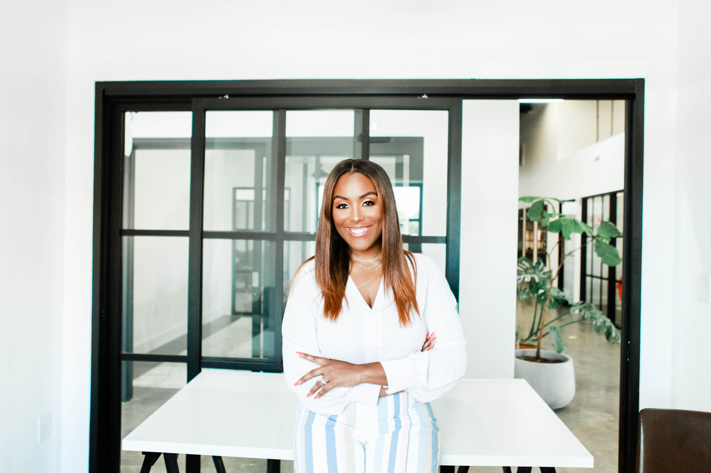

New · Self-Serve Not ready for a fractional COO? Build the system yourself.The SOP Suite is live →
Your Guide
Fallon Scott.
Find it. · Fix it. · Stay until it sticks.
Role
Founder & Principal, F28 & Co. · Fractional COO
Credentials
CPA · Lean Six Sigma · Superhuman Certified in AI
Based In
Atlanta, GA
Working
Worldwide · 2 fractional COO clients at a time
Atlanta · Worldwide

, 02 / Why this lens is rare
Lots of operators. Not many with this stack.
You can hire each one of these lenses separately on Fiverr, Upwork, or LinkedIn. You almost never get all of them in one operator. The work I do isn't "process consulting." It's risk-aware,finance-aware,audit-trained operations. That's the actual differentiator.
01 · THE AUDIT LENS
Big-four trained. KPMG.
I read your business the way an auditor reads a control environment, finding the gap between what's supposed to happen and what's actually happening. Most operators see workflows. I see controls. The same instinct that catches an FAA risk catches the role that's about to bottleneck.
02 · THE FINANCE + METHODOLOGY LENS
CPA + Lean Six Sigma.
Two certifications. One operating system. The CPA reads your financials, margin, cash, OpEx, unit economics. Every system I build gets measured against the P&L, not the calendar. The Lean Six Sigma training brings the worldwide standard for operational excellence: DMAIC, waste removal, variation reduction, defect prevention, and statistical quality control. Together: optimization that pays, with a documented method behind every recommendation. Not vibes. Not self-taught. Credentialed for both.
03 · THE RISK & COMPLIANCE LENS
Enterprise Risk Management.
Three years inside Delta's first internal-audit function, where the cost of getting it wrong was an FAA fine. When I'm helping you implement AI, automate sales, or restructure ops, I'm assessing risk while we're at it, not just chasing efficiency. Where automation creates exposure. Where speed creates liability.
04 · SKIN IN THE GAME
Co-founder. Owner-operator.
I'm not theorizing about what an operator does, I run the seat at a company I co-founded and 11×'d. The advice you get from me is the same advice I'm giving myself in real time, on a P&L I personally own.
You can hire a Fiverr automator. You can hire a process consultant. You can hire an ex-operator. You almost never get all four lenses in one person.
CHAPTER 01 · 2010–2015
I was trained to find what's broken.
I started at KPMG in 2010 as an external auditor, banking (Synovus Bank), Fortune 100 retail (The Home Depot), professional sports (Atlanta Braves), oil & gas. Two years of being placed in front of every kind of business. I learned to walk in cold, read the work papers, ask the questions, and find the place where the system was supposed to do the work but a human was doing it instead.
In 2012 I went in-house at Delta Air Lines, part of the founding team for their first-ever Internal Audit and Risk Management function. A billion-dollar company that had never had one. I ran multi-year engagements across 25 international airports, where the cost of getting it wrong was an FAA violation, a vendor lawsuit, or a fine measured in millions. We delivered a 17% reduction in fines and an 11% improvement in cargo load time.
It was the best training a future operator could ask for. But the frustrating part of audit was always the same: I could only diagnose. Find the gap, write the audit report, send it to the audit committee, walk away to the next engagement. The report was the job. Telling them how to solve it was inside the report. Actually solving it was somebody else's job.And most of the time, nothing had changed.
CHAPTER 02 · 2015–2019
This is where the operator and the automator were born.
In 2015 I left corporate audit and stepped into sales and marketing leadership, scaling and training a 6,000-person distributed team across multiple countries. The audit lens came with me, but the work changed completely. I wasn't writing reports. I was building a sales and marketing org that grew faster than any human could manage by hand.
That's where the operator AND the automator showed up at the same time. I had to figure out how to onboard ten new people in a week without ten phone calls. So I built a YouTube channel. I built duplicatable onboarding sequences. I built nurture campaigns in ConvertKit and MailChimp. I learned Zapier because admin was eating my Saturdays. Other leaders in the company started asking me to train their teams on how I was running mine.
Around that time, I met a brilliant marketing and automation strategist who eventually became my best friend. She came in to automate parts of my business so I could spend my time on sales, training, and travel. The lesson she taught me has shaped every engagement I've run since: automation belongs to the admin layer.Free the human from manual work, then let them do what only the human can do. That principle never left.
CHAPTER 03 · 2019–now
I built an agency. Then it became three.
In 2019 I started F28 Agency as a process optimization shop, take the audit lens, point it at founders, build them maps and SOPs they can actually use. 60+ engagements streamlining workflows and connecting operations end to end, across the full customer journey, for service businesses, agencies, e-commerce, professional services, weddings/events, and consulting firms. The same five gaps show up in almost every founder-led business, regardless of industry.
But clients kept asking me one question I didn't expect: "Who's on your team, can you find me people like that?" I'd built a vetted network of overseas talent (VAs, OBMs, designers, devs, project managers, mostly Philippines and offshore) almost as a side effect of running my own agency. So we spun up a recruiting arm.
Then I eventually merged my agency with that brilliant marketing and automation strategist from Chapter 2. Suddenly F28 was branding, marketing, process optimization, AND recruiting under one roof. A full-service operations partner for founder-led businesses. Today F28 & Co. is an operations consulting firm: an in-house team for operations, AI readiness and recruiting, plus vetted partners for finance, legal, funding and other specialist work. I founded it, and I lead it.
CHAPTER 04 · 2022–now
Then I co-founded a company and 11×'d it in 12 months.
In 2022 I co-founded The Makenzie House. By the time I stepped fully into the operator seat, I got to do all three things I'd been trying to do my whole career: find the gaps, fix them, and stay until they stuck. Hiring infrastructure. KPI dashboards. Process maps. Automations. Leadership cadence.
In one twelve-month stretch we 11×'d revenue, while I managed the physical venue in Texas from Atlanta. That's when I knew the lens had finished translating. Auditor to operator. Find it, fix it, stay until it sticks, but on the inside this time, with skin in the game, owning the outcome.
CHAPTER 05 · now
Now I lead a team that gets it handled.
Today I'm the founder and principal of F28 & Co., an operations consulting firm. I lead a team of seasoned operators, builders and problem-solvers who go into growing businesses, figure out what's not working, and actually fix it. We build the people, processes, platforms and systems a company needs to scale, secure funding, or eventually sell, without everything depending on the founder.
We're not the firm that hands you a 60-page report and leaves. We diagnose what's happening across the business, architect the solution, then build and implement it. Some clients keep us on in a fractional operational leadership seat to run what we built. Others are ready to bring that leadership in-house, so we help them recruit and develop the right person. We build it, help you run it, and get you to the point where you don't need us.
As a fractional COO, I take on two clients at a time. Across the firm, I set the direction and personally lead select engagements, and my team delivers the work.
It's personal. My grandfather built a successful dump truck business in Houston. When he passed away, the business died with him. He didn't have a succession plan, and everything he knew had nowhere to go. He never got the chance to turn individual knowledge into institutional knowledge. That's the work now: helping owners decide what happens to their life's work, instead of having that decision made for them.
If your business has hit a ceiling that feels like you, that's not a failure of effort. That's a system that hasn't been built yet. Let's build it.
The audit lens still works. But the seat changed, and so did what I'm allowed to do with what I find.
PAST LIFE
The Auditor diagnoses.
Walks in, reads the papers, asks the questions, finds the gap. Writes the report. Sends it up the chain. Walks out. The fix is somebody else's problem.
External lens · external authority
Findings, risks, control weaknesses
Recommendation, not implementation
Engagement ends at the report
⟶
NOW
The Operator fixes.
Same audit lens. Different seat. I find the gap, then I build the system, then I stay through adoption, until it runs without me. Owning the outcome instead of the report.
Inside seat · skin in the game
Process maps, SOPs, dashboards, automations
Implementation alongside the team, not in a vacuum
Engagement ends when the system sticks
06 / Industries
Industry-agnostic by design.
The audit lens travels because the gaps founders run into are structural, not industry-specific. KPMG put me in front of nine industries before I turned thirty. F28 added another six. Operations is operations.
Banking & Financial Services
Fortune 100 Retail
Professional Sports
Aviation & Logistics
Sales & Marketing
Wedding & Events
Professional Services
E-commerce
Agencies & Consulting
Realty & Brokerages
Energy & Utilities
+ yours next.
09 / Speaking & Podcasting
Also on stage, behind the mic.
Seven signature talks. A decade of keynotes, workshops, and panels, from rooms of fifty to arenas of twenty thousand. Plus podcast features and original interviews.
I do this work because I know what the other version costs. The version where the founder is the bottleneck. The version where the only person who can take a vacation is the one who isn't building anything.
Based in Atlanta. Married since 2017. CPA. Lean Six Sigma. Devoted to my faith, my family, and the founders I work with, usually in that order, on a good week.
The audit lens isn't going anywhere. But these days I use it to give people their lives back, not to write reports nobody implements.
07 / Receipts
Numbers that moved because the system did.
Outcomes from engagements where I owned the build through to adoption.
11×
Revenue growth on a co-founded company in twelve months.
60+
Process improvement engagements for founder-led businesses.
14hr
Average weekly hours returned to founders post-engagement.
30%
Average operating expense reduction across optimization engagements.
17%
Reduction in fines · Delta Air Lines, 25 international airports.
11%
Improvement in cargo load time · Delta operational audit.
25
International airports under multi-year audit engagements.
20k
Largest live audience to date · arena keynote, Tampa.
10 / Frequently asked
Questions I get before we work together.
If yours isn't here, ask it on the discovery call, it'll probably end up here next.
I'm not sure which package I need. How do I decide?
You don't have to. Start with a discovery call, or, if it's clearly a fit-question, a diagnostic. Right People, Right Seats surfaces people and role gaps. Automate the Admin surfaces opportunities to reduce manual tasks and eliminate waste via automation. Either is fast and fixed-fee. From there we either move into the Ops Partner engagement, or you take the diagnostic deliverables and run with them yourself. Diagnostic fee credits toward a longer engagement if you start one within 30 days.
What industries do you work with?
Industry-agnostic. KPMG put me in front of Synovus Bank, The Home Depot, the Atlanta Braves, and Fortune 100 retail. Delta gave me aviation and operational risk. F28 has put me in service businesses, agencies, e-commerce, professional services, wedding/events, realty, and consulting firms. The audit lens travels because the gaps founders hit are structural, not industry-specific. If your business has humans, processes, and a P&L, the framework works.
Do I need to have my processes documented before we start?
No. That's literally what I do. Show up with whatever you have, or whatever you don't, and we build from there. I run strategic intake with founder, leadership, AND the team that's actually doing the work, then turn what I learn into your first real process maps. If you DO have documentation, we'll still validate it against what the team is actually doing day-to-day, because there's almost always a gap between the doc and the reality.
How do you work with offshore or distributed teams?
Easily, it's one of my specialties. I built and managed offshore teams at Delta, inside my own agency, and for clients. The recruiting arm of F28 grew specifically because clients kept asking who was on my team. The SOPs and systems I create are designed to work across time zones, languages, and cultures, with onboarding, async cadence, and review rhythms that don't depend on you being awake when your team is.
How fast can you start?
It depends on the calendar and when my next engagement slot opens. Diagnostics typically start within two weeks of the discovery call. Full fractional COO engagements start within four to six weeks, sometimes sooner. I keep a limited number of concurrent engagements so each gets real depth. If timing is tight, we'll talk on the call.
What if I need ongoing help after the project?
Many clients move to a monthly retainer after the build for adoption support, KPI reviews, or quarterly process tune-ups. Others bring me back to recruit talent into the business or design AI employees for ongoing operational support. The goal of the original engagement is always to build a system that runs without me, retainer is a choice, not a requirement.
What's the engagement length and pricing?
The SOP Suite is $998, and each diagnostic is $1,500, credited toward an engagement. Everything else is scoped after a discovery call, because the price follows what the business actually needs. As a rough shape, a targeted Acceleration runs about four to twelve weeks and a full Transformation runs about three to six months. You won't get an engagement number on the first call; you'll get clarity, then a scoped quote. The depth is the deliverable. Most fractional COOs run twelve clients at once, I run two. You're not buying hours; you're buying a built-and-adopted system.
Are you remote, in-person, or both?
Both. Some engagements are delivered remotely, and that works extremely well for many of my clients. However, I'm always happy to travel when it creates a better outcome.
That might mean kicking off a Transformation with your leadership team in the same room, facilitating a strategic workshop with key stakeholders, spending time on-site to understand how your business actually operates, or simply meeting face-to-face because building trust early makes the partnership stronger.
Every business is different, and so is every engagement. We'll decide together what creates the most value, whether that's a fully remote engagement, an in-person kickoff, periodic on-site working sessions, or a blend of both. The delivery model should serve the work, not the other way around.
05 / The trail
The credentials, in chronological order.
'10, '12
KPMG · External AuditorBanking (Synovus Bank), Fortune 100 retail (The Home Depot), professional sports (Atlanta Braves), oil & gas. Big-four trained. Industry-agnostic exposure from day one.
Atlanta, GA
→
'12, '15
Delta Air Lines · Internal Audit & Risk ManagementPart of the founding internal-audit team, Delta's first. 25 international airports. 17% reduction in fines. 11% improvement in cargo load time. Stakes measured in FAA violations.
Delta HQ
→
'15, '19
Sales & Marketing LeadershipScaled and trained a 6,000-person distributed team across multiple countries. Where the operator and the automator were born, ConvertKit, MailChimp, Zapier, duplicatable onboarding, full customer-journey systems.
Distributed
→
'19, now
Founder · F28 Agency / F28 & Co.Started as process optimization. Grew through merger into branding, marketing, process & recruiting. 60+ process improvement engagements. Built and known for vetted offshore talent teams.
F28
→
'22, now
Co-founder & Owner-Operator · The Makenzie HouseBuilt the hiring infrastructure, dashboards, automations, leadership cadence. 11×'d revenue in one twelve-month stretch.
The Makenzie House
→
'25, now
Superhuman Certified in AI · Uncommon Leaders ProgramWeekly frontier-AI training, top 0.1% AI architect development track. The certified-AI-architect layer on top of the audit and operator stack.
Frontier AI
→
ongoing
Speaker & Workshop LeadLean Six Sigma. Stages, rooms, and cafes, large and small. Largest live audience to date: a 20,000-seat arena in Tampa.
Multiple stages
→
Find it. Fix it.
, 08 / Work with me
Now you've met the guide.
The next step is yours. Pick the door that fits where you are right now, no pitch, no pressure.